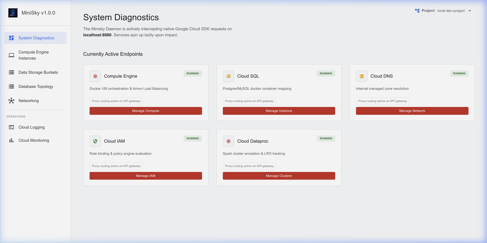

Google Cloud.
Now on localhost.
The premium open-source GCP emulator. Real infrastructure, visual dashboard, zero cloud bills.

The premium open-source GCP emulator. Real infrastructure, visual dashboard, zero cloud bills.
Developed purely in Go as a single, ultra-light binary. All core services utilize lazy loading, spinning up in under 100 milliseconds only when requested.
Develop, test, and run CI/CD pipelines offline. Never pay for local dev again.
Works natively with official GCP SDKs. Just point your emulator host variables.
Stop guessing what's in your emulator. View logs, manage buckets, and inspect pub/sub topics directly from the embedded UI.

MiniSky is the first emulator that treats Long-Running Operations (LRO) as first-class citizens. When you run terraform apply, your code natively polls transitions like PROVISIONING → RUNNING exactly like production.
Simply point the custom endpoint in your provider configuration to your local machine.
# Override the provider endpoint
provider "google" {
project = "local-project"
region = "us-central1"
custom_endpoint = "http://localhost:8080/"
}Manage your local cloud entirely from the terminal. One binary to rule them all.
minisky start
Starts the daemon and API router
minisky stop
Stops the MiniSky daemon
minisky restart
Restarts the daemon
minisky deploy
Deploy a serverless resource
minisky list
List all active resources
minisky logs
Manage Cloud Logging output
minisky compute
minisky storage
minisky pubsub
minisky sql
minisky spanner
Prerequisites: Ensure Docker Desktop and Git are installed.
MiniSky acts as a drop-in replacement. Simply install the lightweight Go binary, start the server, and your standard GCP libraries will connect automatically.
If you don't have Scoop, install it via PowerShell:
Set-ExecutionPolicy RemoteSigned -Scope CurrentUser
irm https://get.scoop.sh | iex# Linux / macOS
curl -sSL https://minisky.bmics.com.ng/install.sh | bash
# Windows (after Scoop is ready)
scoop bucket add minisky https://github.com/qamarudeenm/scoop-bucket
scoop install minisky
# Start the emulator
minisky start